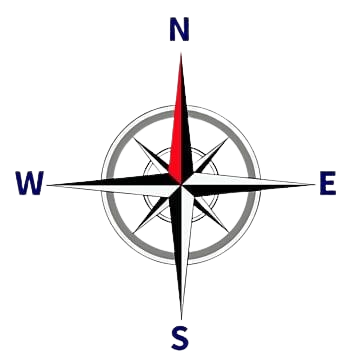

Sebaran Toko Roti di Daerah Istimewa Yogyakarta
Daerah Istimewa Yogyakarta
Home
LEGENDA PETA
Kota Yogyakarta
Sleman
Bantul
Kulon Progo
Gunungkidul
RESET PILIHAN
Penjelasan Singkat
Peta ini menampilkan sebaran
toko roti
di Provinsi DIY. Setiap titik memiliki informasi
nama
dan
alamat
. Wilayah kabupaten/kota diberi warna berbeda dan dapat difilter lewat legenda.
